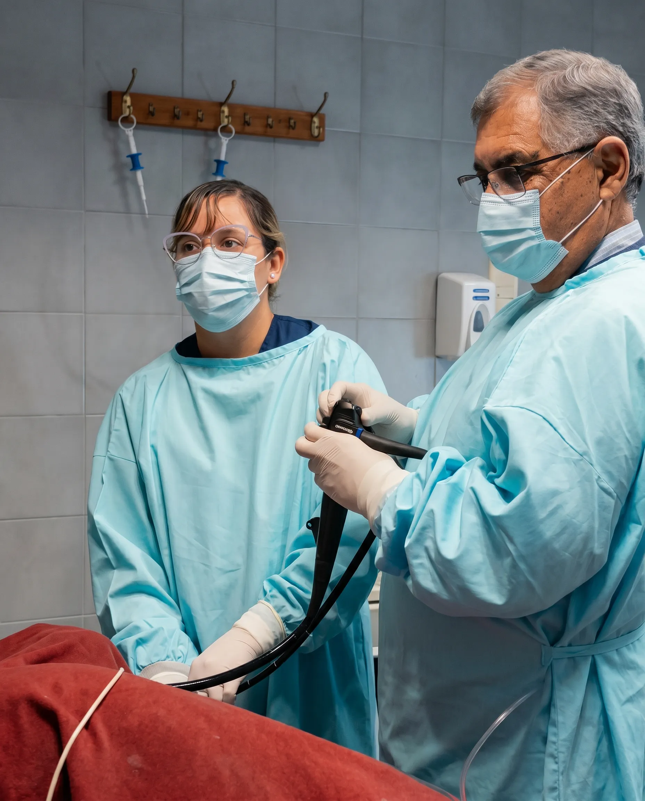

Dr. Carlos Antonio Marinelli

trayectoria
Dr. Carlos Antonio Marinelli
Cirujano General · Gastroenterólogo · Especialista en Endoscopía Digestiva y Proctología
Médico recibido en la Universidad de Buenos Aires en 1977, con 49 años de ejercicio profesional en La Rioja. Pionero en Argentina en cirugía por videolaparoscopía, formador de generaciones de residentes y referente de la cirugía digestiva en la provincia.
Especialidades
Títulos otorgados por las principales sociedades médicas de Argentina
Gastroenterología y Endoscopía Digestiva
Título otorgado por la SAGE — Sociedad Argentina de Gastroenterología
Cirugía de Abdomen y Coló-Proctología
Título otorgado por la AAC — Asociación Argentina de Cirugía
Medicina Legal y Forense
Título otorgado por la Universidad Barceló
Trayectoria Profesional
Formación y desarrollo profesional en Argentina y Europa
Médico — Universidad de Buenos Aires
Diploma otorgado el 19 de marzo de 1977. Internado Rotatorio en el Hospital de Clínicas José de San Martín, UBA.
Residencia completa en Cirugía
1ª Cátedra de Cirugía, Hospital José de San Martín, UBA — duración 3 años. Residencia adicional en Cirugía Oncológica, Hospital Roffo, UBA.
Jefe de Residentes e Instructor
Jefe de Residentes por dos períodos y formador de residentes durante 5 años en el Servicio de Cirugía del Hospital Presidente Plaza, La Rioja.
Beca Internacional — Munich, Alemania
Becado por el DAAD (Deutscher Akademischer Austauschdienst) para perfeccionamiento en cirugía en la Klinikum Grosshadern de la Ludwig Maximilian Universität München.
Miembro Fundador — Asociación Internacional de Cirugía Ambulatoria
Miembro fundador de la Asociación Internacional de Cirugía Ambulatoria, Bruselas, Bélgica.
Instituto Médico Quirúrgico Marinelli
Fundador y Director del Instituto Médico Quirúrgico Marinelli, La Rioja. Pionero en Argentina en cirugía por videolaparoscopía, siendo La Rioja una de las primeras provincias en adoptar esta técnica.
Membresías y Asociaciones
¿Necesitás una consulta?
Comunicarte directamente con el instituto para coordinar un turno con el Dr. Marinelli.